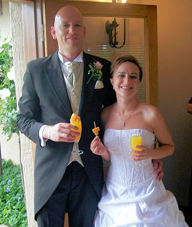

|
Indeks: |
Agri Letaba, wat die hele streek van 5 boereverenigings vanaf Mooketsi tot Hoedspruit verteenwoordig, het gedurende November 2009 b7.c8.d8.e5.f3. Pieter Naude Henning *4-11-1957 van die Tzaneen distrik as sy Korporatiewe Boer van die Jaar aangewys.
Pieter is 'n gevestigde boer in die Tzaneen distrik en het naas omvattende sakebelange in eiendomsbemarking, eiendoms-ontwikkeling, Ingenieurs - en Energiebedrywe, 'n sterk voet-spoor in Bosbou, houtwerk en Avokado boerdery.
Hy is 'n lid van Agri Letaba, Groter Tzaneen sakekamer, Avokado Kwekers-vereniging en Forestry SA.
Hy is die Voorsitter van die Magoebaskloof- en Mathuenyeng grondeienaars-vereniging. Al hierdie plase word deur grondeise bedreig.
Pieter is ook aktief betrokke by die ontwikkeling van bio-brandstof vervaar-digingstegnologie. Hy is een van die grootste avokado boere in die land. Sy saagmeule se uitsonderlike hoë ontginning-syfer stel 'n benydenswaardige standaard vir die industrie.
Hy is 'n pionier op die gebied van komposvervaardiging en Pieter se aanlegte voldoen aan Internasionale standaarde.
Hy het in 2007 'n unieke pakket ontwerp om elektrisiteit te bespaar en pakhuise en fabrieke so ver as Musina het sy konsep geimplementeer.
Daar was geen twyfel dat Pieter Henning van die Groter Tzaneen Boerevereniging die toekenning verdien het nie. Van die kant van die Familiebond wil ons ook vir Pieter baie geluk wens. Ons is sommer baie trots op hom.

Ons het oor die afgelope drie maande van die afsterwe van die volgende Hennings verneem: b1.c3.d10.e4.f6.g1. Olof Abraham Henning *9-8-1938 is op 10 Augustus 2009 te Fraaiuitsig, Kleinbrakrivier oorlede.
Olof, 'n boorling van Zastron, het bykans sy hele lewe lank in die Vrystaat gewoon. Hy verwerf verskeie grade en diplomas, waarvan die belangrikste sekerlik 'n Doktorsgraad in Opvoedkunde was. Hy verwerf ook 'n Goethe-Instituut Beurs om in Duitsland verder te studeer. Na 'n paar jaar as skoolhoof word hy as mede-professor in Wysgerige Pedagogiek aan die Universiteit van die Oranje-Vrystaat aangestel. Na sy aftrede verhuis hy en sy vrou, Fransie na Kleinbrakrivier.
Olof het altyd 'n lewendige belangstelling in die aktiwiteite van die Familiebond gehad. Meeste van die ou foto's van die Johannes Gerhardus tak van die Henning familie is deur Olof aan ons verskaf. Met sy dood het die familiebond 'n baie waardevolle en gewaardeerde helper verloor.
b1.c6.d3.e11.f3. Francois De La Rey Henning *8-12-1914 is op 12 November 2009 oorlede. Met sy dood het hy by sy seun, Frans te Fochville gewoon.
Frans is gebore op die plaas Swartfontein in die Zastrondistrik. Toe hy 14 jaar oud was, is sy pa oorlede op die diamantvelde van Lichtenburg. As gevolg van sy pa se afsterwe het Frans in 'n weeshuis beland waar hy bitter swaar gekry het. Maar hy het gedroom dat hy eendag 'n groot skrywer sal word.
Nadat hy die skool verlaat het na hy net standerd 8 gemaak het, het hy onder andere vir die SA Polisie gewerk en begin poësie skryf. 'n Hele paar van sy gedigte het destyds in Die Brandwag verskyn. As gevolge hiervan is hy deur Olaf Andresen (die komponis van "Die Heidelied" en "My Hart Verlang Na Die Boland") genader om die lirieke vir Andresen se nuwe komposisies te skryf. Dit het gelei tot 'n lang vriendskap met Andresen. 'n Paar van hulle liedjies is wel gepubliseer, soos "Die Poskoets" (gesing deur Amanda Hall) wat mens gereeld in die SAUK se uitsendings gehoor het. Daar was ook ander komposisies, soos "Die Windjie Is Ek" wat vandag in vergetelheid verval het.
Frans was altyd 'n vurige Afrikaner en was tydens die tweede wêreldoorlog 'n aktiewe lid en offisier in die Ossewa Brandwag. Hier het hy advokaat B.J. Vorster ontmoet wat later President van SA geword het. Hy het 'n briefwisseling met Vorster begin en van die briewe het in die hande van die destydse Sap-regering beland. Beide hy en Vorster is vir 'n tyd lank geïnterneer in Koffiefontein terwyl die regering hulle aktiwiteite ondersoek het. Frans is na 'n kort tydjie vrygestel toe daar geen klagtes teen hom gebring kon word nie.
Hy het vir die grootste deel van sy lewe gewerk as proefleser by verskeie koerante (soos Dagbreek en Sondagnuus) en uitgewers, waarskynlik omdat die Afrikaanse taal altyd sy sterk punt was. Hy kon elke Afrikaanse woord in die woordeboek foutloos spel.
Maar Frans het 'n ander droom gehad: Om terug te keer na Zastron, waar so baie Hennings diep wortels het, en 'n suksesvolle boerdery te begin. In 1959 het hy 'n plasie op die oewer van die Oranjerivier naby Zastron gekoop. Sy basiese plan was goed: Om lusernlanderye aan te plant wat hy sou besproei uit die Oranje. Mits jy goeie besproeiing het, kan jy 'n redelike lewe maak uit lusern - selfs op 'n relatiewe klein plasie. Sy probleem was onvoldoende kapitaal. Hy kon nooit die nodige pompe en masjienerie bekostig om sy droom te verwesentlik nie. In 1962 het sy poging misluk en het hy teruggetrek stad toe.
Min of meer hierdie tyd is hy van sy eerste vrou geskei. In 1970 trou hy met sy tweede vrou, Maria Elizabeth Buys.
Frans se oudste seun, Neels, wat in die VSA woon het die volgende opmerking oor sy pa gemaak: "Wanneer mens een van jou ouers aan die dood afstaan, is dit seker van pas om jouself af te vra: 'Wat het ek van hom of haar geleer?' Van my pa het ek geleer dat daar niks verkeerd is om te droom, en groot te droom nie. Sy drome is dikwels deur die harde werklikheid getemper, maar hy het nooit opgehou droom nie. Miskien het ek meer van my drome verwesentlik omdat ek verder kon sien as hy. Ek kon verder sien, nie omdat ek beter was as hy nie, maar omdat ek op sy skouers gestaan het. Ek sal my dromer-pa mis."
b7.c8.d5.e10.f6. Elizabeth (Liza) Brummer (gebore Henning) *Maclear 6-7-1948 is oorlede op 18 November 2009 te Morelettapark, Pretoria aan kanker. Hierdie dodelike siekte is baie jare gelede reeds by Liza gediagnoseer, maar na behandeling was sy skynbaar vir baie jare skoon, totdat dit onlangs weer opgevlam het.
Liza was die enigste vrou wat op die eerste bestuur van die Familiebond gedien het. Sy en haar man Le Roux Brummer het die stigtingsvergadering op 21 Julie 1984 bygewoon, waar sy verkies is. Met haar uittrede drie jaar later, is Le Roux in haar plek op die bestuur verkies.
Liza en Le Roux was van die stigting van die familiebond af getroue en waardevolle ondersteuners en helpers.
Albertina Magdalena Henning (gebore van der Smit) *25-8-1920, eggenote van wyle b1.c3.d10.e10.f4. Henning Willem Jacobus Henning is oorlede op 12 Desember 2009 in die ouderdom van 89 jaar en vier maande.
Tant Alie was 'n nasaat van die Dorslandtrekkers wat teen die middel van die 1870's Angola toe getrek het. Sy self is te Mombola in Angola gebore. Gedurende 1928 het die meerderheid van hierdie Trekkers na die ou Suid-Wes Afrika (nou Namibië) teruggekeer. Tant Alie het haar toekomstige man, Henning Henning, dat ook hier ontmoet en hulle is op 1 Desember 1942 te Outjo, Namibië getroud. Hulle het vyf kinders gehad. Tant Alie het tot en met haar dood in Sederberg Aftree-oord in Prinsloostr, Pretoria gewoon.
b6.c4.d3.e5.f2.g4. Maria Magdalena van Niekerk (gebore Henning) *24-3-1927, is oorlede op 5 Oktober 2009 in die ouderdom van 82 jaar en 6 maande. Verderaan berig ons oor haar pa se medaljes wat sy aan die Henning uitstalling in die Aliwal-Noord museum geskenk het.

Baie dankie aan almal wat finansiële bydraes oor die afgelope drie maande aangestuur het. Ons wil u verseker dat elke sent van hierdie geld in belang van die Henning familie bestee sal word. 'n Spesiale woord van dank aan Jan Henning van Glenstantia, Pretoria en Henning Pieterse van Rietvalleipark, Pretoria wat voortgaan om maandeliks per debietorder by te dra. Dan ook al ons lede wat bedrae van R200.00 of meer bygedra het.
Dr NGC (Nico) Henning van Lyttelton Manor, Centurion, 'n Lewenslange lid - R500.00
Mnr JA (Jan) Henning van Leraatsfontein - R500.00
Mnr LD (Leon) Henning van DrieRiviere, Vereeniging - R300.00
Mnr JC (Jacobus) Henning van Noordstad, Bloemfontein - R200.00
Mnr JS (Cobus) Henning van Bloemfontein, 'n nuwe lid - R200.00

Mense van oor die hele wêreld besoek gereeld ons webwerf op Internet. Die enigste hulp wat ons in die onderhawige geval kon verleen het, was om vir Ariel Hennings te laat weet dat hy deur die twee Duitse geslagsregisters op ons webwerf moet werk. Moontlik kry hy daar 'n leidraad om hom op die spoor van sy voorsate te bring.
Hi!!: Im Ariel Hennings from Lima Peru, My family in Peru, has commissioned me that it look for all the necessary information about our anchestries and as it was that they arrived to this country.
I dont have a lot of information, only, that my grangranfather (Karl Hennings) arrive of Germany. Speak with the embassy here in Peru and suggested me that it look for in the "General File of the Nation" for the exact date and name of the ship that he use for arrive to Peru.
Pls, I dont know where or how begin this, can you help me?. Thanks a lot,
Ariel

Toe ek my aanvanklike navorsing vir die Henning geslagsregister oor die tydperk 1980 tot 1985 gedoen en my eerste boek kort daarna uitgegee het, was nog nie een van die Hennings wat aan die einde van 2009 matriek geskryf of grade aan universiteite behaal het, gebore nie. Inderwaarheid was hulle ouers toe nog jong kindertjies, waarvan baie nie in die geslagsregister opgeneem is nie.
Sedertdien het die "nuwe Suid-Afrika" totstand gekom en het alle bronne om akkurate adreslyste te bekom, soos mis voor die son verdwyn. Ons kon gevolglik nog nie weer 'n groot poging van stapel stuur om met vraelyste die jongste geslagte op rekord te probeer neem nie. Ons het wel talle bywerkings gedoen, soos mense ons van nuwe aankomelinge verwittig het. So kon ons slegs 14 van die 42 matrikulante, wat lede van die Peter Henrich Henning stam is, positief identifiseer.
Wat baie opvallend van die naamlyste is, is hoe die Henning familie ook oor die afgelope klompie jare nuwe naamgewing waardes aangeneem en die ou naamgewing reëls uitgeskop het. Waar ons kinders tot 'n klompie jare gelede tradisionele "Afrikaner" familie name gekry het, is hierdie tipe name deesdae die uitsondering.
Soos gebruiklik het Gauteng weer vir die grootste gros matrikulante gesorg. Ongelukkig kon ons nie die uitslae van die volgende provinsies kry nie: Oos-Kaap, Natal, Mpumalanga en Noord-Wes. Uit ondervinding weet ons dat daar hoogstens 4 tot 5 Henning kinders in hierdie provinsies matriek sou geskryf het. Dit is opvallend hoe die getal Henning kinders wat matriek slaag elke jaar sedert 1984/85 afneem. Teen die middel van die tagtiger jare het ongeveer 60 kinders elke jaar matriek geslaag. Vir 2009 blyk die getal ongeveer 40/42 te wees.
Die toppresteerder vir 2009 was b6.c3.d3.e4.f1.g1.h2.i2.j1.Anja Nanine Henning van die Hoërskool Oos-Moot, Pretoria wat agt onderskeidings behaal het. Sy is die dogter van Johannes Christiaan (Jan) Henning en sy vrou Rachel Cecilia (gebore Goosen). Anja is ook in 2009 as 'n Presidentsverkenner in die Voortrekkers aangewys. Dit is natuurlik die hoogste eer wat 'n Voortrekker in die hoërskool kan behaal. Sy het ook in haar skool se leerlingraad gedien. Anja gaan vanjaar medies aan die Universiteit van Pretoria studeer.
Die name van diegene wat geslaag het, is as volg. Universiteitstoelating word met 'n "U" aangedui en die aantal onderskeidings met 'n syfer en *Waar die genealogiese nommer bekend is, word dit na die naam aangedui:
Gauteng
Anja Nanine(U,8*) b6c3d3e4f1g1h2i2j1
Armand
Brandon Jacques (2*)
Chade (U)
Charissa
Cheree
Emile Heinrich
Leandra
Karel Niklaas (U, 1*) b6c1d3e4f2g2h1i4j1
Lucille (U) b5c4d4e2f4g4h2i4
Marinus (1*) b5c1d5e3f1g1h4i3.
Nicolaas Jacobus (U, 1*)
Pierre
Renaldo(U)
Rochelle b6c4d1e5f6g8h4i1
Ronel Florence Theresa
Ryno(U)b5c1d3e1f1g5h2i1
Shani Monique b6c3d2e6f2g1h2i1
Sonette(U,5*)b6c4d1e5f9g4h3i1
SusannaMaria(U)b1c3d10e10f2g2h4
Tjaart(U)b6c4d7e8f1g1h2
Vrystaat
Philiphus Gerhardus b1c6d3e13f5g4h1
Stella Desire b7c8d5e2f1g2
Elizna
Melissa
Januschka
Marta Aletta
Ruco Juan
Charl Marthinus
Noord-Kaap
Alewyn Petrus b1c3d12e4f2g1h1
Francois
Wes-Kaap
WillemJohannes(U, 1*)b5c5d7e4f4g5h1i1
Lizan (U, 4*)
Limpopo
Llewellyn b10c6d1e1f2g1h2
Onafhanklike skole
S Henning en K Henning

By die Universiteit van Pretoria het net twee Henningkies graad gevang, nl:
b7.c8.d8.e1.f2.g2.h1. Heinrich George Henning, seun van Stanley en Mary-Ann Henning van Wierdapark, Centurion. Hy het die graad B Sc Rekenaarwetenskap met Onderskeiding verwerf.
Dan het 'n Pieter Hendrik Henning die graad BSc Aktuariële- en Finansiële Wiskunde verwerf. Weens die feit dat Pieter Hendrik so 'n algemene naam onder ons Hennings is, is dit nie moontlik om hom te identifiseer nie. As enige van ons lede weet wie hierdie Pieter Hendrik Henning is, sal ons graag van u wil hoor.
Evangeline Henning het die graad B Sc aan die Universiteit van Stellenbosch verwerf. Ongelukkig kan ons haar ook nie positief identifiseer nie.
Dan het die enigste Henning drieling, Anelmi Henning, Elseri Henning en Herman Henning, die kinders van b6.c3.d2.e6.f1.g2.h1. Willie en Gerda Henning van die plaas Leeufontein, distrik Burgersdorp ook hulle aanvanklike Baccalaureus grade teen die einde van 2009 aan die Potchefstroom Kampus van die Noord-Wes Universiteit voltooi. Anelmi het 'n B Com (Geoktrooieerde Rekenmeesterskap) voltooi. Sy het ook 'n "Golden Key Award" verwerf. Sy gaan in 2010 begin met haar Honneursgraad. Elseri het die graad B Com (Finansiële Rekenmeesterskap) verwerf en gaan ook in 2010 met haar Honneurs studies begin. Herman kort slegs een vak vir sy B Com (Finansiële Rekenmeesterskap), maar het goedkeuring gekry om hierdie vak saam met sy Honneurs studies in 2010 te doen.
Ten spyte van verskeie pogings kon ons nie die uitslae van die Vrystaatse Universiteit bekom nie. Normaalweg gradueer een of twee Hennings elke jaar hier.

b6.c4.d3.e5.f2.g4. Maria Magdalena (Marie) Henning, getroud van Niekerk het lank gelede reeds besluit om haar pa (Willem Frederik Henning *19-4-1891) se medaljes aan die Henning Familiebond te skenk, vir uitstalling in die Henning museum. Ongelukkig is sy op 5 Oktober 2009 oorlede, voordat sy die medaljes vir ons kon aanstuur.
Marie se dogter, mev Anne-Marie Singleton van Heuwelsig, Centurion, het egter gedurende Desember 2009 haar oupa se medaljes vir ons gestuur - drie medaljes wat gedurende Wêreldoorlog I (1914 - 1919) aan hom toegeken is, nl. die Oorlogmedalje, die Oorwinningsmedalje en die Afrikadiensmedalje. (Dit is vir soldate wat aan die veldtogte in Noord-Afrika deelgeneem het.) Dan was oupa Willem skynbaar ook 'n kranige skut, want die Noordelike Kommandement se kampioen skut medalje is ook aan hom toegeken. Hy was 'n lid van die 3de ZAR Regiment van die Unie Verdedigingsmag.

b5.c1.d5.e3.f1.g1.h2. Jan Andries Henning *26-4-1949 en sy vrou Corrie se twee seuns, Jan Andries *19-3-1974 (i1.) en Conrad *17-3-1983 (i3.) het beide gedurende 2009 in die huwelik getree. Conrad het op 20 Junie 2009 by die Hartebeespoortdam in die huwelik getree met Barinda Sophia Opperman *23-5-1983. Sy is 'n dogter van Thomas Cornelius Opperman en sy vrou Barinda (gebore Scheepers).
Op 28 November 2009 het Jan se seun, ook Jan Andries (i1.) te Bethal in die huwelik getree met Wilmari van Vuuren *29-7-1981. Sy is 'n dogter van Nico van Vuuren en sy vrou Freda Wilma (gebore Louw)
|  |

Die laboratorium van die Europese Organisasie vir Kernnavorsing is een van die grootste en mees gerespekteerde sentrums vir wetenskaplike navorsing in die wêreld. Twintig Eerste Wêreldlande is daarby betrokke. Die sentrum is by Geneve, op die grens tussen Switserland en Frankryk, 100 meter onder die grond, geleë en huisves die Groot Hadronbotser, die grootste masjien wat nog ooit gebou is - skynbaar 6.9 km lank.
Sub-atomiese partikels, of Protone, word in die Groot Hadronbotser versnel. Met hierdie proefnemings bepaal wetenskaplikes die basiese boublokke van alles wat in die heelal bestaan en hoe alles in die heelal werk, d.w.s alle natuurwette. Meer as 3 000 van die beste wetenskaplikes in die wêreld is by hierdie proefnemings betrokke.
b1.c6.d3.e11.f3.g1.h1. Reyco Henning slaag aan die einde van 1993 matriek aan die Hoërskool Waterkloof in Pretoria, met onderskeidings in al sy vakke. Hy doen die Amerikaanse Universiteitstoelating toetse en word in die boonste 1% in die wêreld geplaas. Hy kry gevolglik 'n beurs om in Amerika te gaan studeer en verwerf sy BSc graad in Fisika en Wiskunde, Magna Cum Laude. Hierna kry hy 'n beurs om doktorale studies aan die beroemde Massachusets Instituut vir Tegnologie (MIT) te doen. Vir sy Doktorsgraad doen hy navorsing in die veld van sub-atomiese partikels (neutrinos) - presies dít wat by die Hadronbotser laboratorium gedoen word.
Reyco word hierna by die Universiteit van North Carolina as Assistant Professor en Partikel Fisikus aangestel. Diegene wat belangstel kan gerus die volgende Internet werf besoek om te lees wat hierdie briljante wetenskaplike van die Hadronbotser sê:
http://moreheadplanetarium.org/blog/?tag=reyco-henning

Ons het nou al by verskeie geleenthede berig oor die Boere wat aan die begin van die twintigste eeu na Argentinië emigreer het en die Henning familie se betrokkenheid daarby. Daar het wel twee groepe Boere verhuis - 'n groep in 1902 en een in 1905. Al vier die Henning families wat emigreer het, het saam met die 1905 groep vertrek.
Die meeste Hennings het wel in 1938 na Suid-Afrika teruggekeer, onder leiding van b6.c1.d3.e5.f3. Pieter Hendrik Henning, maar die familie van b6.c4.d7.e1. Willem Frederik Henning *17-3-1874 het in Argentinië agtergebly. So ook verskeie nooiens Henning, wat met mans met ander vanne getroud is. Ongelukkig het ons kontak met die nasate van Willem Frederik verloor. 'n Foto van sy familie verskyn in die Familiekroniek.
Dit het nou onder ons aandag gekom dat daar in 2002 'n monument in Comodoro Rivadavia ter ere van hierdie pioniers opgerig is. Die monument bestaan uit 'n graniet kaart van Suid-Afrika, 'n graniet kaart van die provinsie Chubut, Argentinië, 'n graniet kakebeenwa en 'n gedenkmuur waar die vanne van al die families wat emigreer het, aangedui word. Die plein waar die monument opgerig is, is hernoem na "Boulevard Colectividao Sudafricana". 'n Ander straat in Comodoro Rivadavia is ook hernoem na "Colonos Sudafricanos". In Afrikaans vertaal: "Suid-Afrikaanse nedersetters". Die inwoners wat in die straat woon, het self vir hierdie naamsverandering gevra. Daar is skynbaar 'n hele paar nasate van die Boere wat in hierdie straat woon.
Daar word vertel dat die Boeregemeenskap nog vashou aan baie van hulle tradisies en gebruike. Hulle boer nog met skape; hulle kook nog "boerekos"; hulle sing nog met nostalgie en geesdrif liedjies soos "Sarie Marais", "Tannie met die rooi rokkie" en "Suikerbossie". Baie van die mense ouer as 45 jaar praat nog vlot Afrikaans. Tydens die Falklandoorlog in 1982 het baie van die Boere weer vir hulle vaderland - nou Argentinië - teen die Engelse geveg.
Die Boulevard Colectividad Sudafricana plein in Comodoro Rivadavia, Argentinië waar 'n monument ter ere van die Boere wat in 1902 en 1905 na Argentinië emigreer het, opgerig is. Let op na die kaart van Suid-Afrika regs, die kaart van Chubut links, die kakebeenwa in die middel en die gedenkplaat agter.
Die gedenkplaat met die vanne van al die Boere wat in 1902 en 1905 na Argentinië emigreer het. Die van Henning kan duidelik tussen die ander vanne gesien word. Die Henning familie het nie net 'n prominente rol in die gemeenskapslewe gespeel nie, maar ook in die terugkeer van 'n groot groep Boere na Suid-Afrika in 1938.
Die hoeksteen van die Gereformeerde Kerk Comodoro Rivadavia in Afrikaans en Spaans wat in 1934 opgerig is. Voor dit het die Boere kerk gehou op die plaas Morgenzon, die plaas van b6.c1.d3.e5. Joseph Jooste Henning.
Die gebou van die Genootskap van Christen vroue van die Suid-Afrikaanse gemeenskap.
Die straat in Comodoro Rivadavia wat "Colonos Sudafricanos" genoem is - die Spaans vir "Suid-Afrikaanse Nedersetters". Verskeie oud Suid-Afrikaanse families woon steeds in hierdie straat. As gevolg hiervan het die munisipaliteit onlangs goedkeuring verleen dat die straat hernoem word.